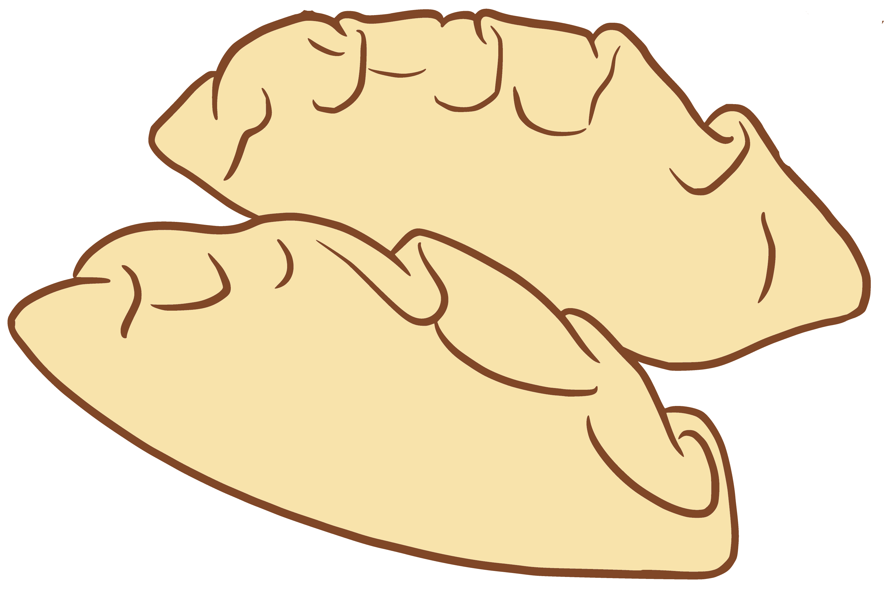

Tradycje Wigilijne
W zależności od regionu i tradycji rodzinnych zestaw wigilijnych potraw jest różny, ale zwyczajowo na wigilijnym stole powinny znaleźć się wszystkie płody ziemi, a potraw powinno być dwanaście. Każdej należy spróbować, co ma zapewnić szczęście przez cały rok. Do najbardziej typowych należą: barszcz z uszkami (wymiennie w niektórych regionach Polski z białym żurem, zupą grzybową, zupą owocową lub zupą rybną), ryby, przyrządzane na różne sposoby, z najbardziej tradycyjnym karpiem smażonym i w galarecie, kapusta z grochem, kapusta z grzybami, pierogi z kapustą, kasza z suszonymi grzybami, fasola z suszonymi śliwami, paszteciki z grzybami, kluski z makiem, cukrem i miodem, makiełki, chałka z kompotem z suszonych owoców, zupa migdałowa czy z tradycji wschodniej kulebiak, gołąbki i kutia. Na Śląsku potrawami wigilijnymi są moczka i makówki. Zgodnie z polskim zwyczajem potrawy wigilijne powinny być postne, czyli bezmięsne i bez użycia tłuszczów zwierzęcych.